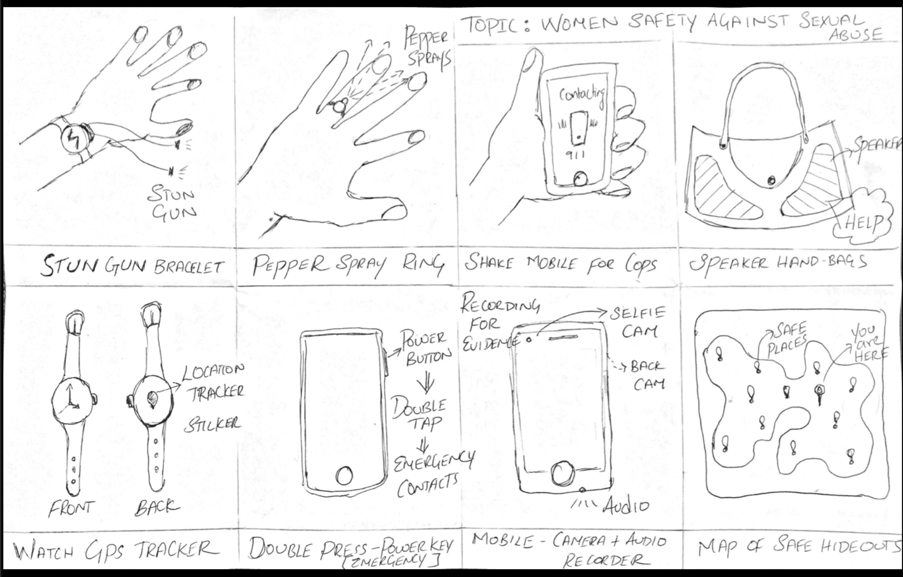
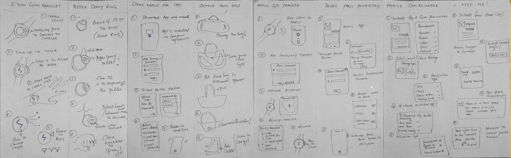
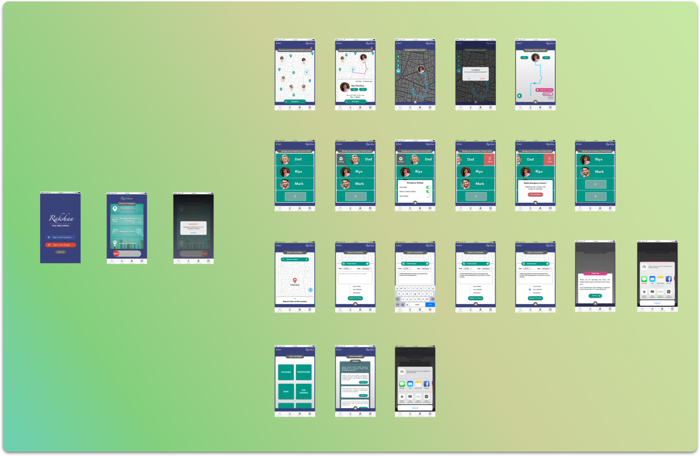

Design
Design Philosophy: A digital solution with minimal interactions for critical features backed by positive feedback and motivation.
Tools: Sketch, Paper Prototype, Invision
Exploring Design Ideas:
Following the discovery phase, I started sketching out alternative solutions that focusses on the design problem guided by my design philosophy. At this stage my only source of user research was through the initial discovery phase and hence I was aware that my sketches were not devoid of "Designer's Assumptions". Accepting this fact made me think broadly and outside the consumer product domain.
Shown below is a picture of the initial sketch depicting 8 unique solutions that shaped my design focus in future iterations.

Brainstorming and Storyboarding:
The 8 sketches were further explored by creating user storyboards. Again, the principle of minimal interactions and ease of access was explored while creating the user stories. Each story contains a minimum of 5 sketches which equals to a total of 40 sketches. Once these sketches were made, the sketches were shown to a peer critique group to receive feedback on the ideas and feasibility of implementation.

Target User Interview:
It was time to interview various stakeholders involved and ask them open-ended questions to allow for a holistic validation of the needs and assumptions. Many of these questions were situational and was framed in a way to understand the user's psychological and emotional behaviour. Few questions were also asked to describe their involvement in preventing sexual-harassment and other social engagements.

Learnings from User Interviews:
Interacting with the target users at this stage of the design process was important for me to focus on specifics of the interactions and functionalities. The following are few of the learnings from the Interviews:
1) Many target users were apprehensive about using defensive technologies such as pepper sprays and taser guns.
2) Users don't want external devices that needs to be charged regularly.
3) Many users prefer to use mobile applications rather than purchasing external devices that can be worn in the wrist/ring.
4) Users also felt bad about situations where many incidents go unreported and their efforts to make them public go unrewarded
5) Finally, many users agreed that they do not use similar applications since they trigger a lot of false alarms and send broadcast signals unnecessarily to friends and family
Personas:
Key to any successful UX Design is to know the users and their needs. No two users are alike consequently their needs are different as well. It is important to identify the different types of target users and to create a persona that defines this subset of user group. For this Design, I identified 4 Personas and 1 Ant-Persona for whom the design would fail. The 4 Personas were created having in mind their Motivations, frustrations and Goals.
Creating different personas shed light on the various stakeholders involved and also helped me in identifying the most important stakeholder. The Anti-Persona played a key role by reminding me throughout as to whom this solution is not for.
Participatory Design:
Following the interview and user profiling, a brief brainstorming session was held with the target users and evaluated the design sketches previously made to get a sense of their emotional reactions to the proposed solutions. This activity revealed the features that the users want and liked and the user critiques helped me to negate all my assumptions at the start. Now I had a clear understanding of the needs and the features that the users would like to see in the final product (Yes, a mobile application)
Lo-Fidelity Prototype (User test):
The paper prototype was tested with 3 target users and 2 general audience to get a holistic view about the interactions and usability. Each participant was given a task to perform without any guidance. The user interactions and the body language was noted to understand the UI conflicts and concerns.
User Testing Results
1) Many users were able to navigate through the prototype to do the assigned task.
2) A few felt that critical features were nested inside other functionalities
3)The users liked the idea of positive feedback in the reporting crime section of the prototype
Wireframing:
Incorporating the user feedbacks on the paper-prototype, the design was iterated a few times before arriving at the final digital wireframes. The visual design was done in Sketch and the interactions were created using Invision.

Hi-Fidelity Prototype:
Feel free to play around with the Hi-Fidelity prototype.